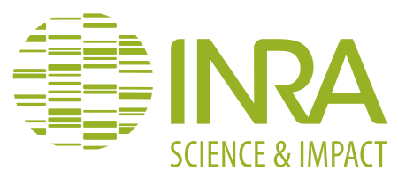

Création et analyse d'un réseau de régulation génique en RDF
Application au puceron
Maël Kerbiriou
Tuteurs : Denis Tagu (INRA) et Frabrice Legeai (INRIA)

Réseau de régulation du puceron

Technologies du Web Sémantique
RDF
- Resource Description Framework
- Un document est une collection de triplets :
(sujet, predicat, objet) - Les ressources sont identifiées par des URIs
RDF
Interprétation en graphe

RDF
Syntaxe Turtle
@prefix xsd: <http://www.w3.org/2001/XMLSchema#> .
@prefix rdf: <http://www.w3.org/1999/02/22-rdf-syntax-ns#> .
@prefix rdfs: <http://www.w3.org/2000/01/rdf-schema#> .
@prefix : <http://www.semanticweb.org/irisa/ontologies/2016/1/igepp-ontology#> .
:ACYPI087140-RA rdf:type :mRNA ; # la ligne suivante porte sur le même sujet :
rdfs:label "ACYPI087140-RA" ;
:has_cinetic :diminution .
# La ligne suivante aborde un nouveau sujet :
:ACYPI004799-RA rdf:type :mRNA ;
rdfs:label "ACYPI004799-RA" ;
:has_foldChange "2.1"^^xsd:decimal.
SPARQL
Language de requête
pour l'extraction de sous-graphes par motifs :

SPARQL
Syntaxe inspirée du SQL
PREFIX : <http://www.semanticweb.org/irisa/ontologies/2016/1/igepp-ontology#> .
PREFIX rdf: <http://www.w3.org/1999/02/22-rdf-syntax-ns#> .
SELECT ?mRNA_Var ?cinetic_Var
WHERE {
?mRNA_Var rdf:type :mRNA ;
:has_cinetic ?cinetic_Var .
?cinetic_Var rdf:type :cinetic .
}
AskOmics

AskOmics

Motivations

nani gigantum humeris insidentes
Motivations

Intégrer des ressources externes
SPARQL
Fédération

SPARQL
Fédération
Permet de mélanger des motifs sur des graphes locaux et distants de manière transparente
PREFIX rdf: <http://www.w3.org/1999/02/22-rdf-syntax-ns#>
PREFIX owl: <http://www.w3.org/2002/07/owl#>
PREFIX up: <http://purl.uniprot.org/core/>
PREFIX : <http://www.semanticweb.org/irisa/ontologies/2016/1/igepp-ontology#>
SELECT ?mRNA ?uniac
WHERE {
GRAPH <urn:sparql:tests-askomics> {
?mRNA :has_UniProtAC ?uniac .
}
# Requête executée sur l'endpoint UniProt
SERVICE <http://sparql.uniprot.org/> {
?uniac up:classifiedWith ?go .
?go rdf:type owl:Class .
}
}
SPARQL
Fédération
Deux possibilités pour accéder aux ressources externes :
- Interroger les ressources via la fédération sur demande
- Copier les données dans un graphe local pour ensuite les interroger
→ Évaluation des performances
Motivations

La Gene Ontology est un vocabulaire pour la classification d'entités biologiques
Motivations

Transitivité et reflexivité pour interpréter la Gene Ontology
Objectifs
Développer dans AskOmics les fonctionalités pour
- Intégrer des ressources externes
- Cas d'étude : Rapatriement des termes GO pour les mRNA à partir d'UniProt
- Benchmarks : Fédération à la demande vs. copie dans une graphe local
- Spécifications
- Interroger avec la Gene Ontology (GO)
- Interroger les termes GO des entités
- Sélectioner les entités par des termes GO
- Benchmarks pour la transitivité
Requêtes : Fédération
Copie des annotations GO dans un graphe local
PREFIX rdf: <http://www.w3.org/1999/02/22-rdf-syntax-ns#>
PREFIX rdfs: <http://www.w3.org/2000/01/rdf-schema#>
PREFIX owl: <http://www.w3.org/2002/07/owl#>
PREFIX up: <http://purl.uniprot.org/core/>
PREFIX : <http://www.semanticweb.org/irisa/ontologies/2016/1/igepp-ontology#>
INSERT { GRAPH <urn:sparql:tests-askomics> {
?mRNA :has_UniProtAC ?uniac .
?uniac :has_GO ?go .
} }
WHERE {
GRAPH <urn:sparql:tests-askomics> { # Dans le graph d'AskOmics :
?mRNA rdf:type :mRNA . # Sélectionne les ARNm
# La variable ?mRNAmet capture les identifiants des ARNm avec le prefixe utilisé sur UniProt :
BIND( IRI( REPLACE( str(?mRNA),
"http://www.semanticweb.org/irisa/ontologies/2016/1/igepp-ontology#",
"http://purl.uniprot.org/ensemblmetazoa/" ))
AS ?mRNAmet )
}
SERVICE <http://sparql.uniprot.org/> { # Requête executée sur l'endpoint UniProt
?uniac rdf:type up:Protein ;
rdfs:seeAlso ?mRNAmet ;
up:classifiedWith ?go .
?go rdf:type owl:Class .
}
}
Requêtes : GO
Interrogation des termes GO

Requêtes : GO
Interrogation des termes GO
SELECT ?go_direct FROM <urn:sparql:tests-askomics>
WHERE {
up:X1XMA5 :has_GO ?go_direct .
}
Requêtes : GO
Interrogation des termes GO (Avec transitivité)

Requêtes : GO
Interrogation des termes GO (Avec transitivité)
SELECT ?go FROM <urn:sparql:tests-askomics>
WHERE {
up:X1XMA5 :has_GO ?go_direct .
?go_direct rdfs:subClassOf* ?go .
}
Requêtes : GO
Sélection des entités avec des GO termes
La transitivité est généralement souhaitée.Requêtes : GO
Sélection des entités avec des GO termes
La transitivité est généralement souhaitée.SELECT ?uniac FROM <urn:sparql:tests-askomics>
WHERE {
?uniac :has_GO ?go .
?go rdfs:subClassOf* og:GO_0016021 .
}
BenchMarks
- Transitivité GO
- Inférence vs. Property Path
- Transitivités montante et descendante : sélection et interrogation.
- Fédération
- Sur demande
- vs. Graphe local
Benchmarks : Transitivité
Intérogation des termes GO associés aux mRNA

Non significatif pour l'utilisateur
Benchmarks : Transitivité
Sélection des mRNA par termes GO associés

Non significatif pour l'utilisateur
Benchmarks : Fédération
Intérogation et Sélection GO sur un graphe local vs. fédération à la demande

Gain d'un facteur 1000x avec une copie locale !
Spécifications
pour l'intégration de ressources externe

Contributions au code source

Conclusion
- Copie dans un graphe locale
- Performance : facteur 1000 comparé à la fédération sur demande
- Valide uniquement pour les requêtes qui parcourent tout le graphe
- Utile uniquement pour des interrogations répétées
- Property path plus flexible et légèrement plus rapide que l'inférence
- Diverses contributions au code source d'AskOmics
- Le développement continue dans AskOmics
Merci
pour votre attention
Questions ?